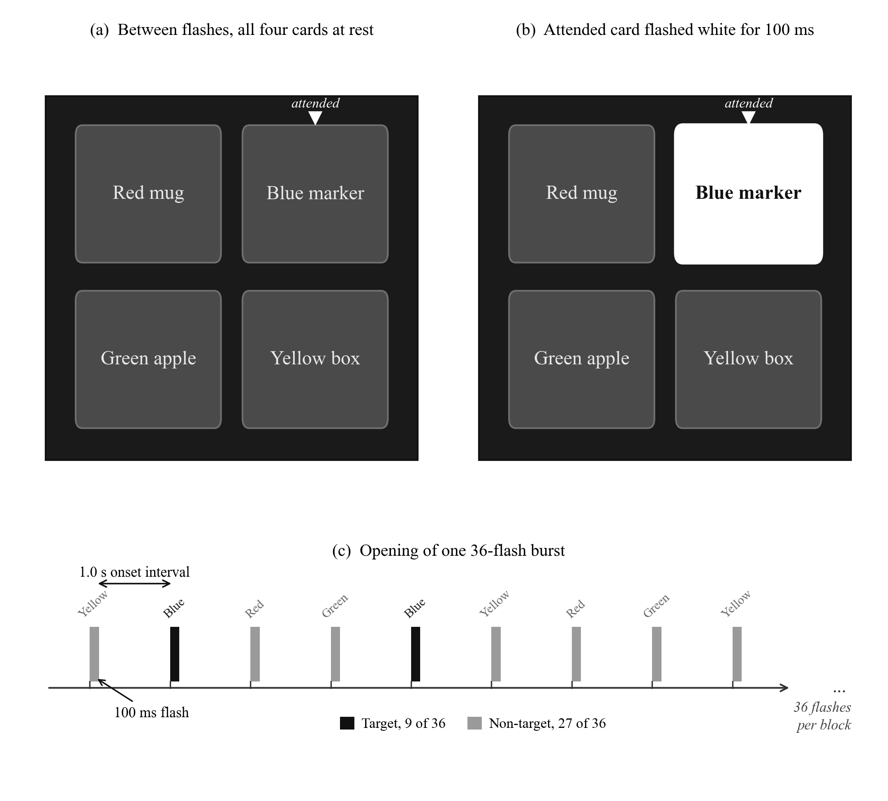

Visual protocol
Four-object stimulus interface
The camera identifies exactly four candidate objects. Their fixed identities are used through the visual flash sequence so the classifier result remains attached to the correct physical target.